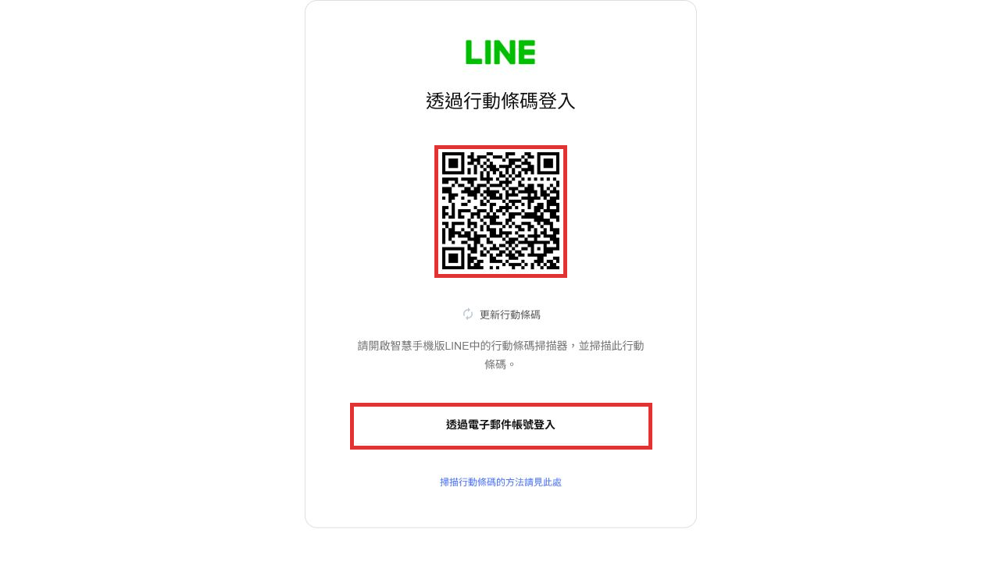
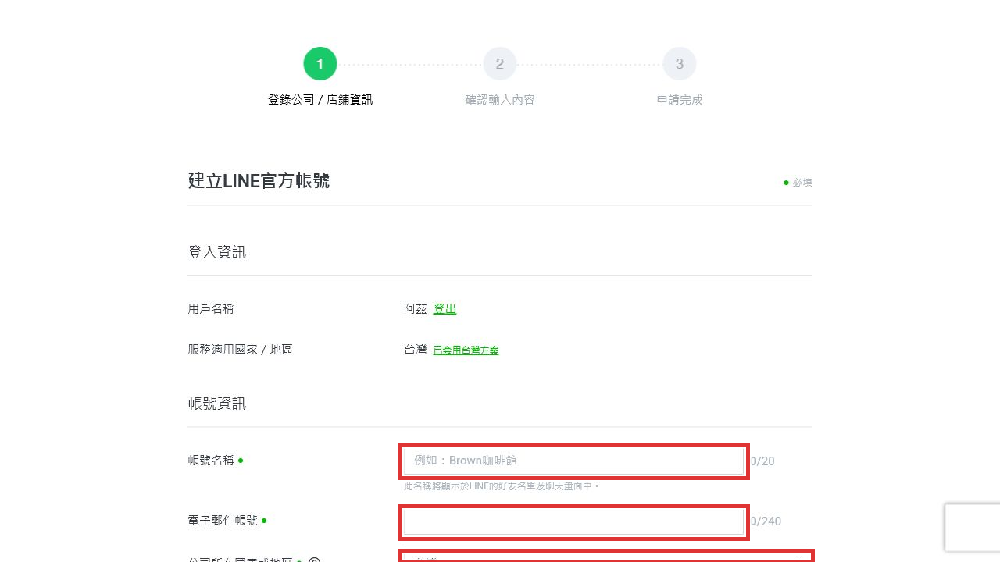
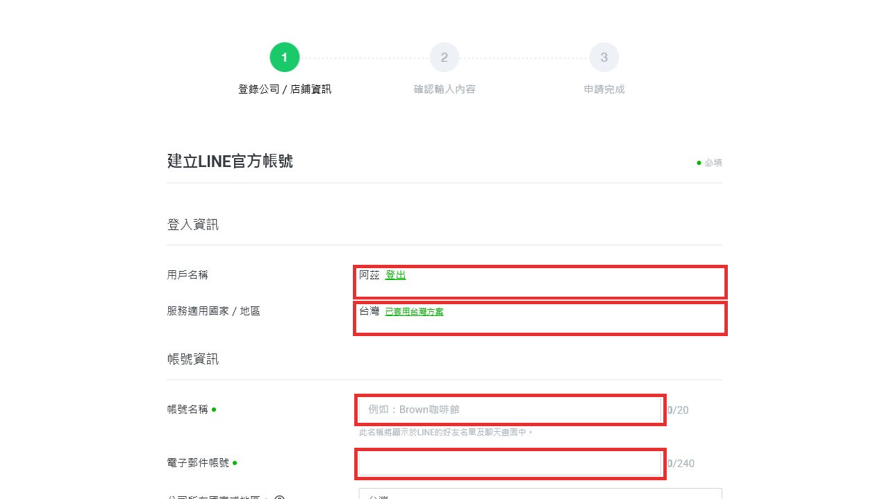
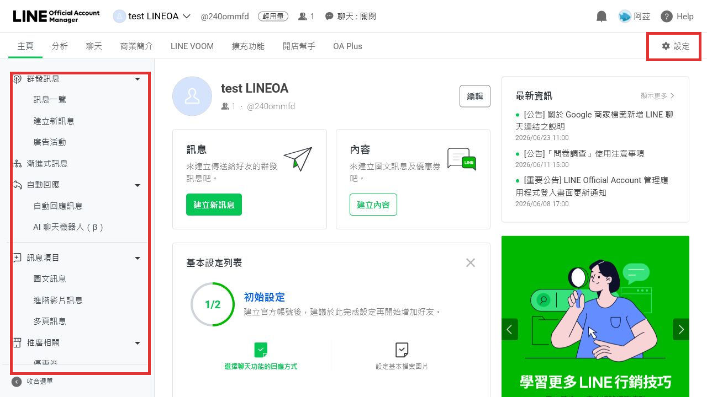
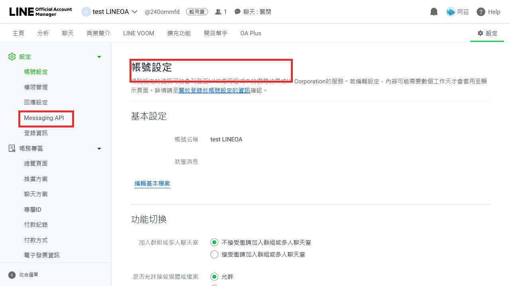
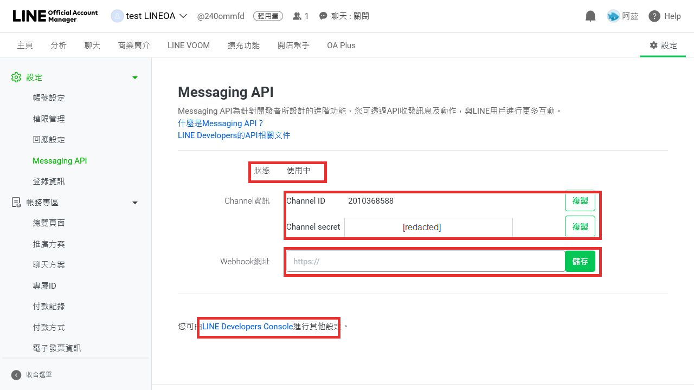
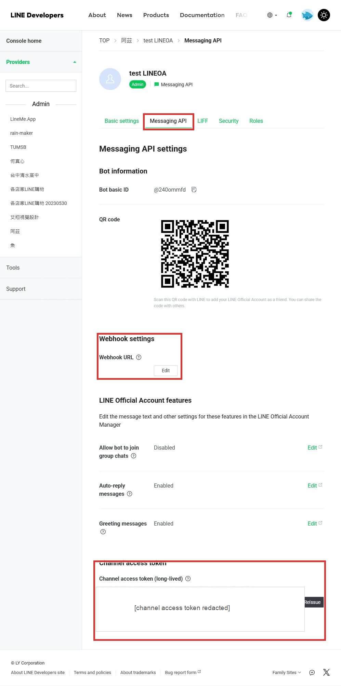

流程總覽
整體操作可以拆成四段：登入、申請官方帳號、開通 Messaging API、取得 access token 並設定 Webhook。
1. 登入
進入 manager.line.biz，使用 LINE Business ID 或 LINE 帳號登入。
2. 建立官方帳號
點選「建立」，填寫帳號、公司、業種與條款確認。
3. 啟用 Messaging API
在官方帳號後台進入「設定」中的 Messaging API。
4. 取得 access token
前往 LINE Developers Console 的 Messaging API 頁籤複製或發行 token。
一、登入與申請 LINE 官方帳號
先進入 LINE Official Account Manager。登入完成後，左側選單會出現「建立」入口，用來新增官方帳號。
- 進入登入頁 開啟 manager.line.biz，依畫面選擇 LINE 帳號或 Business ID 登入。
- 從帳號列表點選「建立」 登入後會看到目前可管理的官方帳號清單，左側選單的「建立」會進入申請表。
- 填寫公司與店鋪資訊 表單會要求帳號名稱、電子郵件、公司所在地、公司名稱、業種大分類與小分類。
- 確認條款並送出 閱讀 LINE 官方帳號服務條款與隱私權政策後，按「確定」進入確認頁。送出後才會正式建立帳號。




二、開通 Messaging API
Messaging API 是後端程式與 LINE 用戶互動的核心功能。開通後會產生 Channel ID、Channel secret， 並可以設定 Webhook URL 與 Channel access token。
- 進入官方帳號後台的「設定」 在帳號後台右上或上方導覽列點選「設定」。
- 點選左側「Messaging API」 左側設定選單中會看到 Messaging API。若尚未開通，這裡會出現「啟用 Messaging API」按鈕。
- 選擇或建立 Provider 啟用流程通常會要求選擇 LINE Developers Provider。Provider 可理解為開發者組織或專案歸屬。
- 確認開通 確認後系統會建立 Messaging API Channel，並回到設定頁顯示「使用中」。
注意：
按下「啟用 Messaging API」會建立 API 存取權與 Developers Channel，屬於外部系統狀態變更。
正式帳號操作前，請確認 Provider、帳號名稱與管理權限都正確。


三、取得 Channel access token
後端呼叫 LINE Messaging API 時，需要使用 Channel access token。這個 token 必須放在後端環境變數或密鑰管理服務， 不能寫在前端 HTML、公開 Git repository 或教學文件中。
- 從 Messaging API 設定頁進入 LINE Developers Console 在官方帳號後台的 Messaging API 頁面下方，點選「LINE Developers Console」。
- 確認 Provider 與 Channel Console 左側選擇對應 Provider，進入該官方帳號的 Messaging API Channel。
- 切到「Messaging API」頁籤 頁面中會看到 Bot information、Webhook settings、LINE Official Account features 與 Channel access token。
- 複製或發行 token 若已有 token，使用複製按鈕取得；若尚未發行，按「Issue」。若要更換外洩或失效 token，才按「Reissue」。
Token 操作原則：
「Reissue」會產生新的 access token，可能導致舊 token 失效或需要同步更新後端環境變數。
不要在未安排部署更新前隨意重發正式帳號 token。
後端環境變數建議
取得 token 後，建議把 LINE 串接資訊放在伺服器端的環境變數。
LINE_CHANNEL_ID=2010xxxxxx LINE_CHANNEL_SECRET=replace_with_channel_secret LINE_CHANNEL_ACCESS_TOKEN=replace_with_channel_access_token LINE_WEBHOOK_URL=https://your-domain.example.com/line/webhook
Webhook URL：
後端服務部署完成後，回到 LINE Official Account Manager 或 LINE Developers Console 填入 HTTPS Webhook URL。
常見格式為
https://你的網域/line/webhook。儲存後可在 Developers Console 進行 Webhook 驗證。

四、交付與安全檢查
完成設定前，建議逐項確認以下內容，避免正式帳號串接後出現權限、Webhook 或密鑰管理問題。
帳號權限
確認操作人員在官方帳號與 Developers Console 都有管理員權限。
Provider 歸屬
確認 Messaging API Channel 建在正確 Provider 底下，避免後續交接困難。
Webhook HTTPS
Webhook URL 必須是公開可連線的 HTTPS 網址，本機或內網 URL 無法讓 LINE 正常呼叫。
Token 保存
Channel secret 與 access token 僅放在後端環境變數或 Secret Manager，不放在前端程式碼。
部署同步
若重發 token，後端環境變數也要同步更新並重新部署。
測試訊息
Webhook 啟用後，用測試 LINE 帳號加入好友並發送訊息，確認後端有收到事件。